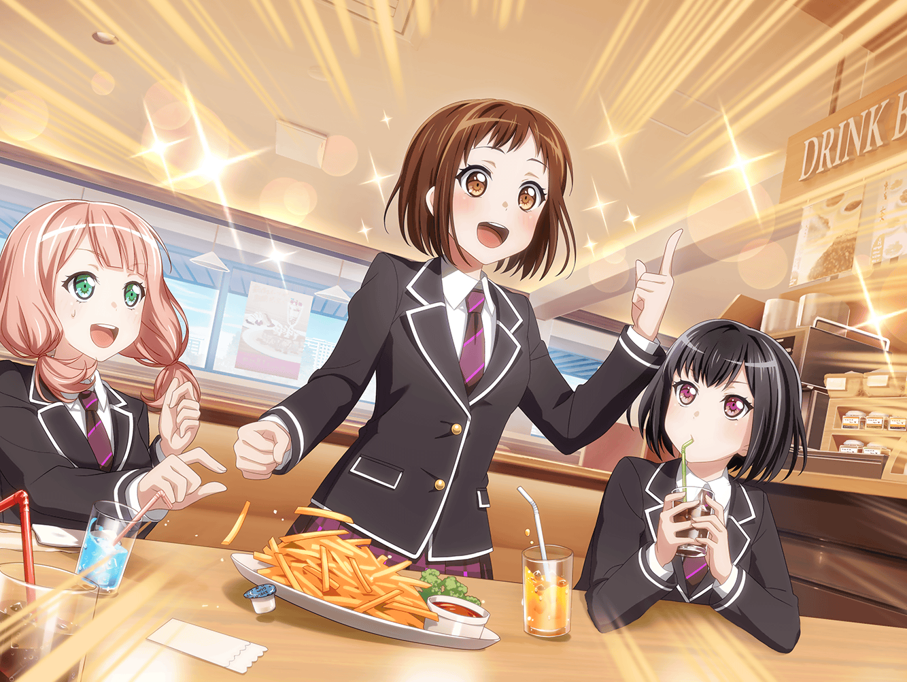

ファミリーレストラン
ひまり
はい、つぐはハンバーガーだったよね？
つぐみ
うん、ありがとう
巴
このポテト、もらっていいか？
ひまり
うん、これは巴の分だよ♪
ひまり
いや〜、ここのポテトってほんと美味しいよね～♪
いくらでも食べられちゃうっ
巴
あまり食べすぎると、衣装が入らなくなるぞ？
ひまり
うっ……！
ひまり
だ、大丈夫。
まだ……きっと、大丈夫なはず……！
つぐみ
あはは……
巴
まあ、食べた分は消化すれば大丈夫だろ
ひまり
はい、がんばります……
つぐみ
そういえば、次のライブ、もうすぐだね
巴
ああ。
さっきモカが『蘭がセットリスト作ってるよ〜』って
メッセージ入れてたな
ひまり
ライブか～
私達もずいぶんライブ慣れしたと思わない？
巴
だな。
ひまり、最初の頃はライブ前すごく緊張してただろ？
ひまり
うっ、それは……
でも、最初は誰だって緊張するし……！ ね、つぐ
つぐみ
う、うん。
私は今でも緊張しちゃうけど……
つぐみ
これでも昔に比べれば、緊張はしなくなった方だと思う
ひまり
うんうん。
それだけ成長したってことだよね♪
巴
そういえば……
つぐがバンドやろうって言い出したの、ここだったな
ひまり
その話、この間もしたよね！
懐かしいなぁ
巴
つぐはたまに思いもよらないことを言うから驚くよ
つぐみ
そ、そうかな？
つぐみ
あの時は蘭ちゃんが授業に出なくなって……
それがすごく心配で……
つぐみ
みんなもそうだったと思うけど、
私に何かできないかなって、ずっと考えてたんだ
つぐみ
そんな時に、ひまりちゃんが
『ライブを実際にやれたら楽しい』って言ってくれて、
ピンときたの
つぐみ
バンドを組めば、みんな一緒にいられる！って
つぐみ
それから誰がなんの楽器をやるか決めて、練習をして……
つぐみ
文化祭に出ることになった時はすっごく緊張したけど、
それ以上に楽しかったなぁ
ひまり
うんうん！
みんなで、わ～！ って盛り上がって楽しかったよね！
巴
ああ。
あの時のことは、今でも夢に見るよ
巴
そういや、蘭もモカも珍しく興奮してたっけ
ひまり
そうそう！
蘭なんて笑ってたし！
ひまり
蘭があんなに楽しそうに笑うなんて、
久しぶりに見たな～
つぐみ
うんっ
つぐみ
あの時の蘭ちゃんの笑顔を見て思ったの。
バンドしようって、言ってよかったなぁって
つぐみ
私にもできることがあったんだって、
うれしくなっちゃった！
ひまり
うんうん！
巴
……ってか、
あの時の話してたら、無性にドラムが叩きたくなってきた
ひまり
私もベースが弾きたいっ！
次の練習はいつだっけ？
つぐみ
えっと……
スタジオ練習は、明後日だよ
ひまり
うぅ～、明後日まで待てないっ
スタジオ空いてないか、聞いてみる！
ひまり
つぐも行くよね？
つぐみ
うんっ
蘭ちゃんとモカちゃんも誘ってみるね